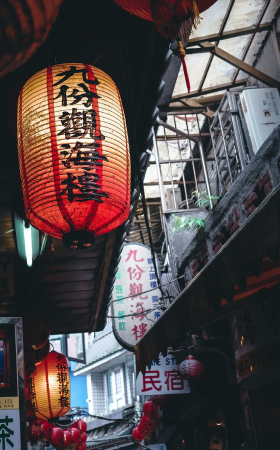

Attraction 観光名所
九份

細い路地の階段に沿って建つ古い館に、提灯が灯るノスタルジックな風景。1989年、映画「非情城市」の舞台になったことをきっかけに再び注目を集めると共に、日本では、九份の町中にある建物が2001年公開の映画「千と千尋の神隠し」に登場する湯婆婆の湯屋を彷彿させるとして話題に。日本統治時代に建てられた古い建物が残ることから、どこか懐かしい雰囲気が漂う町並みは日本人の琴線に触れ、今や台湾で行きたい観光地ナンバーワンとなりました。

幻想的な夕暮れがねらい目
台北101

高さは509.2m、地上101階あるのが名前の由来です。エレベーターは東芝エレベータ製で、毎分1,010メートル（時速60.6キロメートル）の速さで上昇でき、地上1階から展望台のある89階（地上382.2メートル）まで39秒で到達します。展望台、オフィス、レストラン、ショッピングモールなどが入る台湾を代表するランドマークワーで、有名なカウントダウンパーティーをはじめ節目に合わせたライトアップも行っています。一度は行っておきたい名所です。

展望台営業時間帯